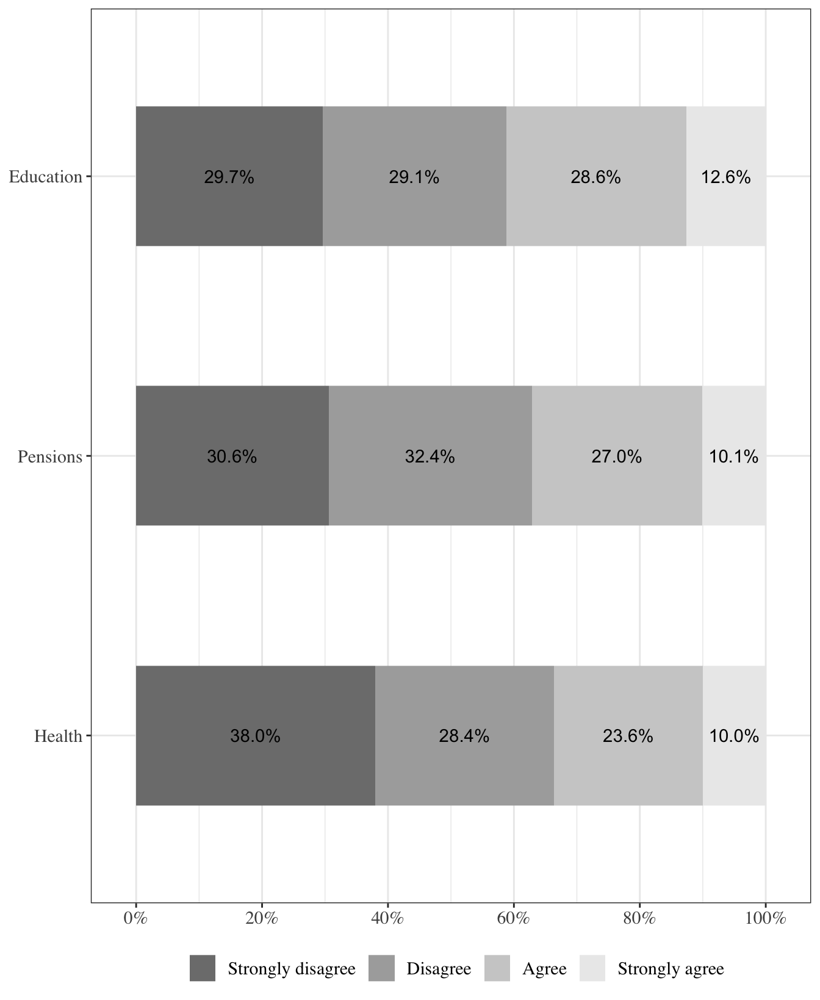
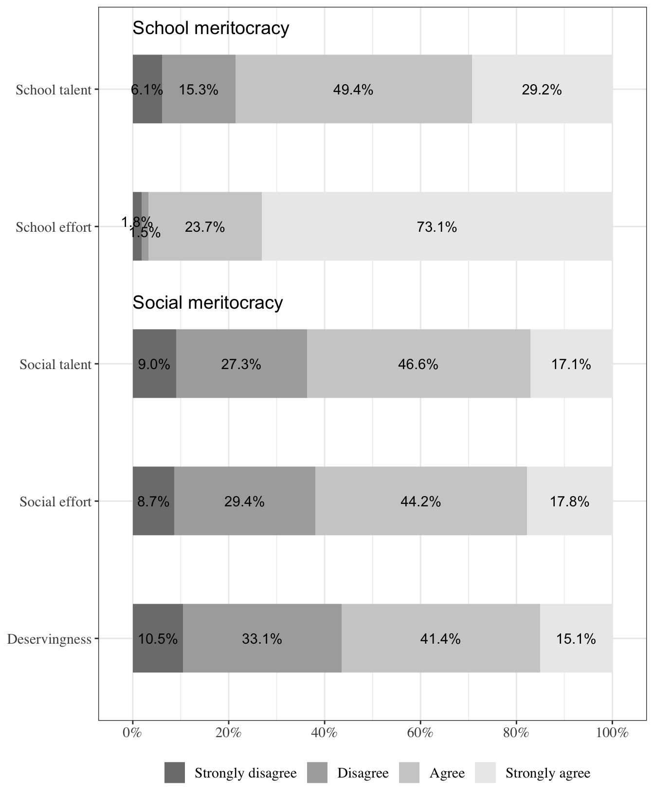
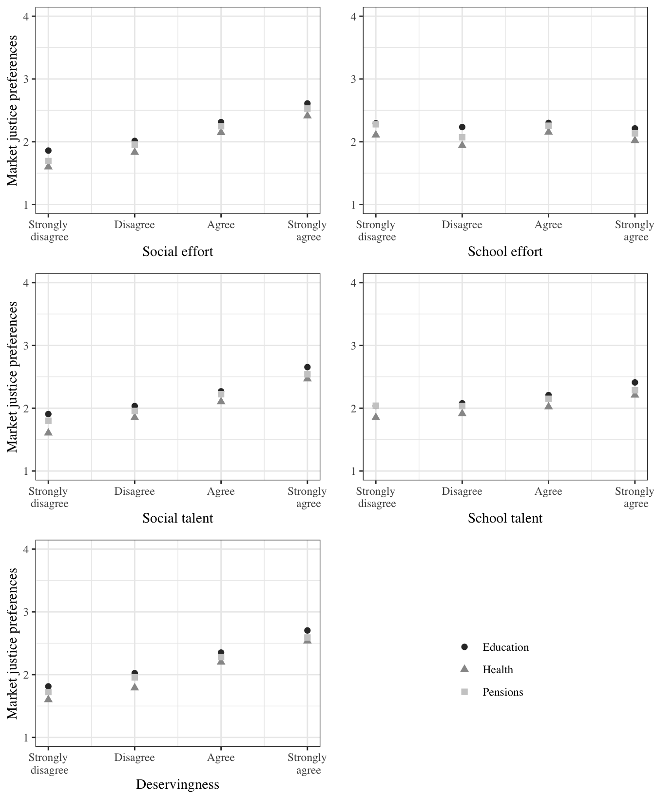
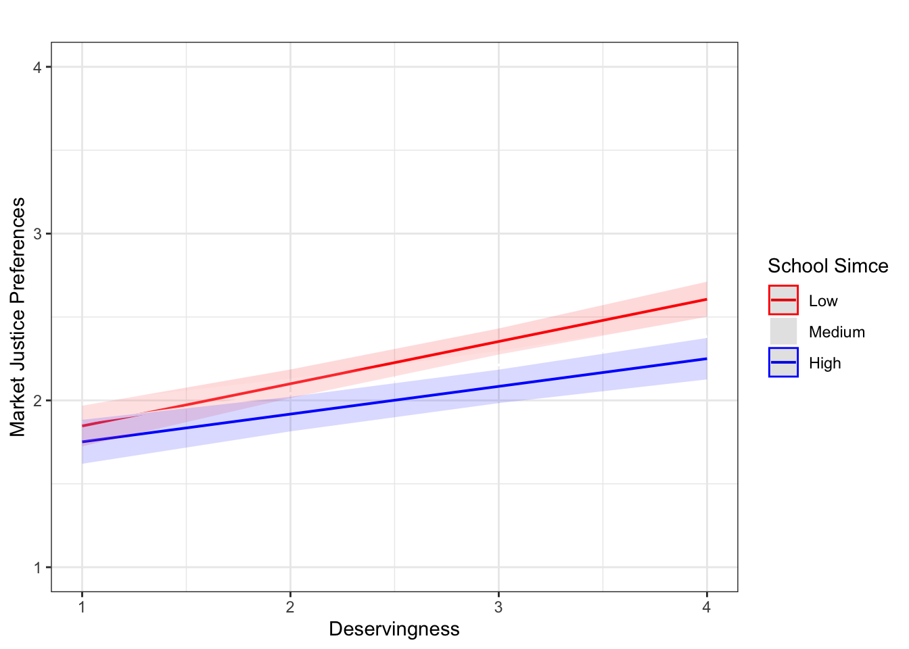

Analysis
Descriptive analysis
Figure 1 shows the frequency distribution for the three market justice preference items (pensions, education, and health). The majority of respondents disagree (63.0% in total) with the idea that it is just for higher-income individuals to access better pensions. However, a notable portion (27.0%) agrees, and a smaller minority (10.1%) strongly agrees. Similar to pensions, a majority of respondents (58.8%) disagree with the idea that higher-income individuals should have access to better education. However, a considerable portion (28.6%) agrees, and a slightly larger minority (12.6%) strongly agrees compared to pensions. In the context of health, an even larger majority of respondents (66.4%) disagree with the notion that higher-income individuals should access better healthcare services. A smaller percentage (23.6%) agrees, and a minority (10.0%) strongly agrees. Overall, Figure 1 shows a predominant sentiment against the justice of higher-income individuals accessing better services across all three areas. The strongest opposition is observed in the health sector. Despite the overall disagreement, a significant portion of respondents agree with the statement, particularly in education, where agreement and strong agreement are slightly higher compared to pensions and health.
Figure 2 shows the frequency distribution for the five meritocracy items for the dimensions of school and social meritocracy. While a significant portion of respondents (29.2%) strongly agrees that talent is important to get good grades, a larger majority (78.6% combining agree and strongly agree) supports this notion. However, the strong agreement is not as pronounced as for school effort. An overwhelming majority (73.1%) agree that students effort is important to get good grades, which is a much higher percentage compared to the strong agreement for talent (29.2%). This indicates that people believe effort is more important than talent at school. There is a strong belief that both effort and talent are important, with a particularly high agreement for effort (73.1% strongly agree).

In relation with social meritocracy, Figure 2 shows that a majority of respondents (63.7% combining agree and strongly agree) agree that people are rewarded for their talent in society, with a notable portion (17.1%) strongly agreeing. A majority (62.0% combining agree and strongly agree) agree that people are rewarded for their effort in society. Similar to social talent, the perception is positive but less overwhelming than school meritocracy. The perception of whether people get what they deserve in society is more divided. While a slim majority (56.5% combining agree and strongly agree) agree, a significant minority (43.6%) disagrees, showing that this is the most contentious item among respondents. There is general agreement that people are rewarded for talent and effort in society, but the consensus is weaker compared to school meritocracy. Deservingness in society is the most contentious, with significant disagreement among respondents.
Figure 3 shows a series of graphs depicting the association between the variables of market justice preferences - in education, health, and pensions - and the variables of meritocratic perception at school (effort and talent) and in society (effort, talent, and deservingness) (see conceptual diagram in ?@fig-hypotheses). On the left, we observe the social meritocracy diagrams, while on the right the school meritocracy diagrams are shown. For the three variables of perception of meritocracy in society the relationship is clear, since the average of market justice preferences increases the more there is agreement that people are rewarded for their effort, merit, and talent. This relationship needs to be clarified in the case of the variables of perception of meritocracy at school. To the extent that there is more agreement that the perception of talent is essential for obtaining good grades, the average of market justice preferences increases, but this relationship is not as clear as with the variables of meritocracy in society. In addition, the graph does not show a clear trend in the relationship between the perception that effort is essential to obtain good grades and market justice preferences.

Multivariate results
The results of the cumulative link mixed models for the ordinal dependent variables of justice in differential access to health, pensions and education by income are presented in Table 1. This table shows the effects of individual and contextual-level independent variables related to our hypothesis; however, the models also incorporate the control variables utilized in the study for each of the three dependent variables separately (complete models are available in the Appendix).
| Health | Pensions | Education | ||||
|---|---|---|---|---|---|---|
| Model 1 | Model 2 | Model 1 | Model 2 | Model 1 | Model 2 | |
| School talent | 1.25*** | 1.25*** | 1.18*** | 1.17*** | 1.28*** | 1.28*** |
| (0.03) | (0.03) | (0.03) | (0.03) | (0.03) | (0.03) | |
| School effort | 0.77*** | 0.77*** | 0.77*** | 0.78*** | 0.79*** | 0.79*** |
| (0.04) | (0.04) | (0.04) | (0.04) | (0.04) | (0.04) | |
| Social talent | 1.17*** | 1.17*** | 1.13** | 1.14** | 1.15** | 1.16** |
| (0.05) | (0.05) | (0.04) | (0.04) | (0.04) | (0.04) | |
| Social effort | 1.12* | 1.12* | 1.31*** | 1.32*** | 1.16** | 1.16** |
| (0.05) | (0.05) | (0.05) | (0.05) | (0.05) | (0.05) | |
| Deservingness | 1.67*** | 1.65*** | 1.45*** | 1.44*** | 1.55*** | 1.54*** |
| (0.05) | (0.05) | (0.05) | (0.05) | (0.05) | (0.05) | |
| Parental education (Ref.= 8th grade or less) | ||||||
| Secondary | 0.86 | 0.90 | 0.92 | 0.96 | 0.85 | 0.86 |
| (0.10) | (0.10) | (0.10) | (0.10) | (0.10) | (0.10) | |
| Higher tec. | 0.80 | 0.87 | 0.84 | 0.90 | 0.81 | 0.85 |
| (0.11) | (0.12) | (0.11) | (0.11) | (0.11) | (0.11) | |
| University or posgraduate | 0.90 | 0.97 | 1.04 | 1.05 | 0.93 | 0.93 |
| (0.12) | (0.12) | (0.11) | (0.12) | (0.11) | (0.12) | |
| Missing | 0.95 | 1.01 | 1.02 | 1.06 | 0.98 | 0.99 |
| (0.10) | (0.10) | (0.10) | (0.10) | (0.10) | (0.10) | |
| Socioeconomic level (Ref.= Low) | ||||||
| SES Medium low | 1.11 | 1.03 | 1.11 | |||
| (0.10) | (0.10) | (0.10) | ||||
| SES Medium | 0.93 | 0.97 | 0.97 | |||
| (0.14) | (0.14) | (0.14) | ||||
| SES Medium high | 0.80 | 0.93 | 0.90 | |||
| (0.19) | (0.18) | (0.19) | ||||
| SES High | 1.38 | 1.82 | 2.00* | |||
| (0.33) | (0.32) | (0.33) | ||||
| Achievement score (Ref.= Low) | ||||||
| Simce Medium | 0.78** | 0.84* | 0.88 | |||
| (0.08) | (0.08) | (0.08) | ||||
| Simce High | 0.59*** | 0.60*** | 0.65*** | |||
| (0.10) | (0.09) | (0.10) | ||||
| Controls | Yes | Yes | Yes | Yes | Yes | Yes |
| Log Likelihood | -6307.78 | -6283.35 | -6486.51 | -6461.58 | -6598.78 | -6579.61 |
| AIC | 12649.57 | 12618.69 | 13007.02 | 12975.16 | 13231.56 | 13211.21 |
| BIC | 12760.84 | 12788.88 | 13118.40 | 13145.51 | 13342.88 | 13381.47 |
| Num. obs. | 5144 | 5144 | 5177 | 5177 | 5159 | 5159 |
| Groups (mrbd) | 231 | 231 | 232 | 232 | 231 | 231 |
| Variance: mrbd: (Intercept) | 0.10 | 0.05 | 0.08 | 0.04 | 0.10 | 0.05 |
| Note: Coefficients models in odds-ratio. Control variables are included. Standard errors in parentheses. ***p < 0.001; **p < 0.01; *p < 0.05 | ||||||
Table 1 demonstrates a similar trend for the three dependent variables of justice in differential access to pensions, education, and health, with all effects being statistically significant. In the context of school meritocracy, the effects are mixed: as perceived school talent increases, the justification for differentiated access to these services increases; conversely, as perceived school effort increases, the justification decreases, holding all other variables constant. Regarding the variables of social meritocracy, the three variables of talent, effort, and deservingness show that as these increase, the justification for differentiated access to pensions, education, and health also increases. Overall, these results provide partial support for our first hypothesis (H1a), which posited that students who perceive higher levels of meritocracy in school would be more likely to justify differential access to pensions, health, and education. This is evidenced by the positive effect of perceiving talent as important for achieving good grades. However, the results strongly support our second hypothesis (H1b), as a higher perception of societal meritocracy among students tends to increase the justification for market-based justice in these social services. CAMBIAR
Contextual effects for ordinal models.
| Model 1 | Model 2 | Model 3 | Model 4 | |
|---|---|---|---|---|
| Intercept | 1.31*** | 1.37*** | 1.40*** | 1.42*** |
| (0.09) | (0.10) | (0.11) | (0.11) | |
| School talent | 0.11*** | 0.10*** | 0.10*** | 0.10*** |
| (0.01) | (0.01) | (0.01) | (0.01) | |
| School effort | -0.12*** | -0.12*** | -0.12*** | -0.12*** |
| (0.02) | (0.02) | (0.02) | (0.02) | |
| Social talent | 0.07*** | 0.07*** | 0.07*** | 0.07*** |
| (0.02) | (0.02) | (0.02) | (0.02) | |
| Social effort | 0.08*** | 0.08*** | 0.08*** | 0.08*** |
| (0.02) | (0.02) | (0.02) | (0.02) | |
| Deservingness | 0.20*** | 0.20*** | 0.19*** | 0.19*** |
| (0.02) | (0.02) | (0.02) | (0.02) | |
| Parental education (Ref.= 8th grade or less) | ||||
| Secondary | -0.07 | -0.05 | -0.05 | |
| (0.05) | (0.05) | (0.05) | ||
| Higher tec. | -0.10 | -0.08 | -0.07 | |
| (0.05) | (0.05) | (0.05) | ||
| University or posgraduate | -0.02 | -0.01 | -0.01 | |
| (0.05) | (0.05) | (0.05) | ||
| Missing | -0.00 | 0.01 | 0.01 | |
| (0.05) | (0.05) | (0.05) | ||
| Socioeconomic level (Ref.= Low) | ||||
| SES Medium low | 0.00 | 0.02 | ||
| (0.05) | (0.05) | |||
| SES Medium | -0.07 | -0.03 | ||
| (0.07) | (0.06) | |||
| SES Medium high | -0.16 | -0.08 | ||
| (0.09) | (0.09) | |||
| SES High | 0.12 | 0.25 | ||
| (0.16) | (0.15) | |||
| Achievement score (Ref.= Low) | ||||
| Simce Medium | -0.10** | |||
| (0.04) | ||||
| Simce High | -0.24*** | |||
| (0.04) | ||||
| Controls | Yes | Yes | Yes | Yes |
| Deviance | 12368.01 | 12355.60 | 12335.98 | 12306.45 |
| Deviance Test (p) | 0.00 | 0.00 | 0.00 | 0.00 |
| BIC | 12517.46 | 12572.78 | 12638.31 | 12636.48 |
| Num. obs. | 5047 | 5047 | 5047 | 5047 |
| Num. groups: mrbd | 231 | 231 | 231 | 231 |
| Var: mrbd (Intercept) | 0.02 | 0.02 | 0.02 | 0.01 |
| Var: Residual | 0.66 | 0.66 | 0.66 | 0.66 |
| ***p < 0.001; **p < 0.01; *p < 0.05 | ||||
Regarding our measure of market justice preferences index, the results of the multilevel linear estimation are shown in Table 2. The intraclass correlation obtained for the null model (not shown) it’s equal to 4% (ICC based on [@hox_multilevel_2010, p.15]), which indicates that only a small percentage of the total variance of the students’ market justice preferences are associated with the characteristics of schools, and therefore limits the possibilities of finding effects at this second level of analysis.
Model 1 introduces social meritocratic variables: effort (whether efforts are rewarded), deservingness (people get what they deserve), and social talent (intelligence and skills are rewarded in society). In line with our hypotheses, the perception of a meritocratic society is positively related to the justification of inequality. Model 2 shows a mixed picture: while those perceiving that talent is rewarded also justify the inequality, the perception that effort is rewarded at school is negatively related to justification of inequality. Family background variables in Model 3 reveal that education and technology access are not related to justification of inequality, whereby we observe a negative impact of family cultural capital as measured by the number of books at home. While school socio-structural variables added in Model 4 show no significant effects, average achievement scores in the SIMCE test depict a negative relationship with the dependent variable, meaning that students that attend schools with better achievement scores on average justify less inequality.
In relation to model fit, when comparing the deviance with a model without predictors (null model), all the models have a statistically significant difference, with model 5 having the lowest deviance. According to Raudenbush and Bryk’s (2002) estimate of R2, the level 1 variance of model 5 is 0.11 and the level 2 variance is 0.72. The total variance of model 5 according to Snijders and Bosker (2012) is 0.14.
| Variable | School talent | School effort | Social talent | Social effort | Deservingness |
|---|---|---|---|---|---|
| University or Postgraduate | -0.034 | -0.012 | -0.073. | -0.079* | -0.118** |
| More than 25 books | -0.015 | -0.046 | -0.029 | -0.081** | -0.035 |
| School SES high | 0.004 | 0.001 | -0.057. | -0.063* | -0.08** |
| Prop. university level | 0.008 | -0.021 | -0.123 | -0.171* | -0.162. |
| Simce Medium | 0.001 | 0.032 | -0.037 | -0.041 | -0.082* |
| Simce High | -0.016 | 0.008 | -0.043 | -0.063. | -0.087* |
| Note: ***p < 0.001, **p < 0.01, *p < 0.05 |
The interaction terms in Table 3 suggest that students’ family background moderates the relationship between their meritocratic perceptions in Chile and their justification of inequality. The direction of these effects confirms our initial prediction. Thus, in line with our Hypothesis 3, the relationship between social effort and justification of inequality becomes less positive for those students whose parents achieved university or postgraduate education. That is, lower-status students (measured by parental education) justify more inequality when they adhere more strongly to deservingnessmeritocratic perceptions in Chile. This result confirms the enlightenment thesis (see above). The same moderating effect is observed for students’ family cultural capital: the relationship between effort (but not deservingness nor social talent) and justification of inequality becomes less positive for students with more than 25 books at home. Interestingly, family cultural capital also moderates the relationship between meritocratic beliefs at school (as measured by students’ belief that effort is important to get good grades) and justification of inequality.
At the school level, we also observe moderating effects of school status and students’ meritocratic beliefs over their justification of inequality. Thus, in line with our Hypothesis 5, high-status schools justify less inequality when, on average, their students have a greater perception of meritocracy in Chile, as measured by the three indicators we used (i.e., effort, deservingness, and talent). Finally, as we stated in Hypothesis 7, low-achieving schools justify more inequality when their students have, on average, stronger meritocratic beliefs in Chile. In Figure 4 we depict this moderating effect of school achievement for the relationship between deservingness and justification of inequality. We did not observe these moderating effects at the school level for students’ meritocratic beliefs in the school (i.e., the idea that effort or talent are important to get good grades).
